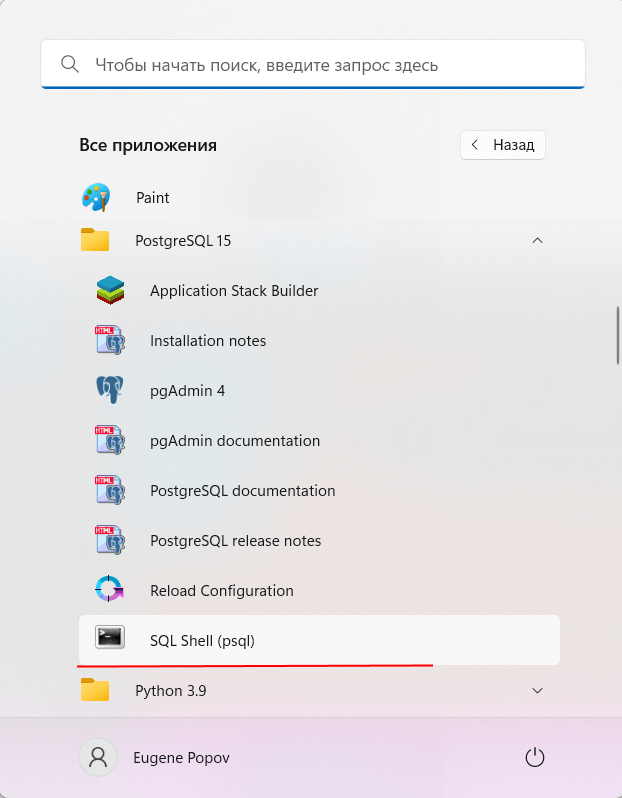
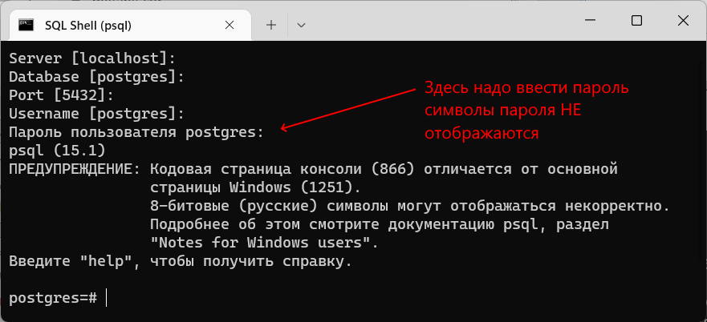
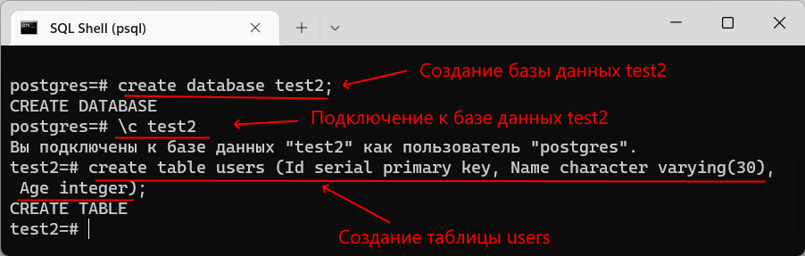

Вернуться на главную страницу →
Вернуться на главную страницу →
Консольный клиент psql
Консольный клиент psql представляет еще один способ взаимодействия с сервером PostgreSQL. Данная программа также, как и pgAdmin, позволяет выполнять команды языка SQL.
Запустим psql. Программа предложит ввести название сервера, базы данных, порта и пользователя. Эти пункты можно прощелкать, так как для них будут использоваться значения по умолчанию (для сервера - localhost, для базы данных - postgres, для порта - 5432, в качестве пользователя - суперпользователь postres). Далее надо будет ввести пароль для пользователя (по умолчанию пользователя postgres):
И после удачного подключения можно будет отправлять серверу команды через psql.
Теперь создадим базу данных с помощью следующей команды языка SQL:
create database test2;
Для создания базы данных применяется команда create database, после которой указывается название бд. То есть в данном случае название бд - "test2". Причем команда завершается точкой с запятой.
Далее подключимся к этой базе данных для осуществления с ней взаимодействия. Для этого применяется команда \c (сокращение от connect), после которой указывается имя базы данных:
\c test2
Затем создадим в этой базе данных таблицу с помощью команды:
create table users (Id serial primary key, Name character varying(30), Age integer);
Данная команда создает таблицу users, в которой будет три столбца - Id, Name и Age.
После этого мы можем добавлять и получать данные из выше созданной таблицы. Вначале добавим в таблицу одну строку с помощью следующей команды:
insert into users (Name, Age) values ('Tom', 33);
И в конце получим добавленные данные:
select * from users;
Стоит отметить, что по умолчанию консоль в Windows поддерживает кодировку CP866, тогда как базы данных могут работать совсем с другой кодировкой, например, 1251. И даже сам клиент psql выводит нам соответствующие сообщения. Кроме того, при получении данных, при выводе информации о базах данных, таблицы и т.д. некоторая информация может отображаться некорректно. В этом случае перед запуском psql надо установить нужную кодировку и затем из консоли запустить программу psql.